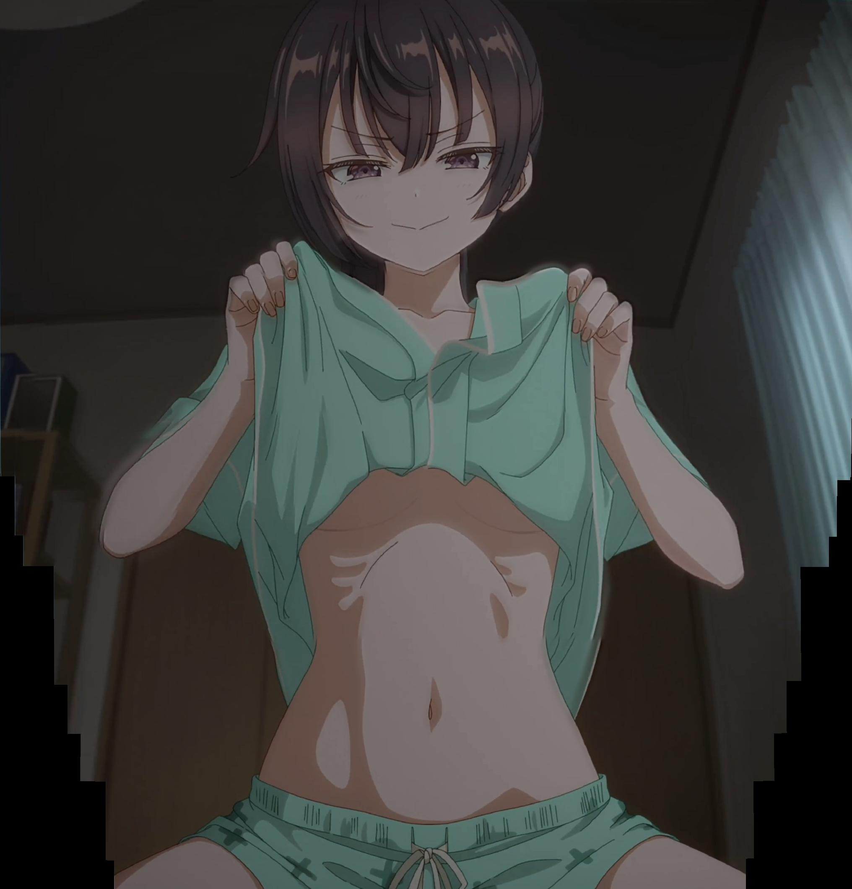

To be honest I still think I like Alya more than Yuki, but a lot of that comes from her relationship with Kuze and how I think that it will progress. This does not mean that I don't like Yuki, I mean she is extremely hot and is Kuze's little sister and I like those kinds of characters. I guess I have just been rooting for Alya for quite a while now so I really want to see her win in the end. I think Masha is ultimately a nonfactor so I do not think about her all that much. I have the ninth volume of the light novel on my shelf, but I have one more book to finish before I read it. I really want to know how Alya reacts to learning that they are siblings.